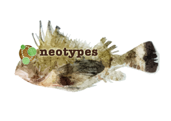

neotype - a type specimen that is selected subsequent to the description of a species to replace a preexisting type that has been lost or destroyed


neotypes
Scala lightweight, type-safe, asynchronous driver (not opinionated on side-effect implementation) for neo4j.
- Scala - the driver provides you with support for all standard Scala types without the need to convert Scala <-> Java types back and forth and you can easily add your types.
- Lightweight - the driver depends on
shapelessandneo4j Java driver - Type-safe - the driver leverages typeclasses to derive all needed conversions at the compile time.
- Asynchronous - the driver sits on top of asynchronous Java driver.
- Not opinionated on side-effect implementation - you can use it with any implementation of side-effects of your chose (scala.Future, cats-effect
IO, Monix Task, etc) by implementing a simple typeclass.
scala.Futureis implemented and comes out of the box.
The project aims to provide seamless integration with most popular scala infrastructures such as lightbend (Akka, Akka-http, Lagom, etc), typelevel (cats, http4s, etc), twitter (finch, etc)…
Resources
Setup
"com.dimafeng" %% "neotypes" % version |
Core functionality. Supports scala.concurrent.Future. |
"com.dimafeng" %% "neotypes-cats-effect" % version |
cats.effect.Async[F] implementation |
"com.dimafeng" %% "neotypes-monix" % version |
monix.eval.Task implementation |
"com.dimafeng" %% "neotypes-akka-stream" % version |
result streaming for Akka Streams |
"com.dimafeng" %% "neotypes-fs2-stream" % version |
result streaming for FS2 |